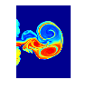
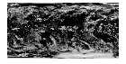

MATLAB Example Data Sets
MATLAB® has hundreds of data sets spanning a variety of file formats and sizes. These data sets are used in documentation examples and to demo software capabilities. This topic summarizes useful data sets in a variety of formats, but it is not a comprehensive list.
Observational Data
| Filename | Description | How to Load |
|---|---|---|
accidents.mat | Data on US traffic accidents and fatalities in 2004 from the US Department of Transportation. The data covers all 50 states and the District of Columbia. File Size: 8 KB Data Size: 51 rows, 17 variables |
load accidents.mat
|
census.mat | US population data from 1790 – 1990. File Size: 1 KB Data Size: Two column vectors with 21 elements |
load census.mat
|
airlinesmall.csv | US domestic airline flight data from 1987 – 2008. File Size: 11,747 KB Data Size: 123,523 rows, 29 variables | See Analyze Big Data in MATLAB Using Tall Arrays for an example that loads and processes this data. Documentation must be installed to access this data. |
patients.mat | Medical patient information for 100 fictional patients. File Size: 3 KB Data Size: 100 rows, 10 variables |
load patients.mat |
outages.csv | Data on electric utility outages in the US. File Size: 99 KB Data Size: 1,468 rows, 6 variables | Load the CSV data as a table: T = readtable('outages.csv'); |
penny.mat | A detailed 3-D image of the surface of a US penny. File Size: 2 KB Data Size: 128-by-128 matrix | To view a surface plot of the penny, use the command: penny edit penny.m |
seamount.mat | A seamount is an
underwater mountain. The data set consists of a set of longitude
( File Size: 2 KB Data Size: Three column vectors with 294 elements. |
load seamount.mat
|
wind.mat | 3-D data on air currents over North America. The data
consists of File Size: 142 KB Data Size: Six matrices of size 35-by-41-by-15 |
load wind.mat
|
Image Data
| Filename | Description | How to Load |
|---|---|---|
| This NASA Hubble Space Telescope image shows one of the most complex planetary nebulae ever seen, NGC 6543, nicknamed the "Cat's Eye Nebula." Hubble reveals surprisingly intricate structures including concentric gas shells, jets of high-speed gas and unusual shock-induced knots of gas. File Size: 27 KB Image Size: 600 x 650 |
I = imread('ngc6543a.jpg');
imshow(I) |
| A picture of a city street including cars, pedestrians, signs, and buildings. File Size: 37 KB Image Size: 640 x 480 |
I = imread('street1.jpg');
imshow(I) |
| A picture of a busy city intersection. File Size: 39 KB Image Size: 640 x 480 |
I = imread('street2.jpg');
imshow(I) |
| An MRI data set that contains 27 image slices of a human head. The images are arranged into a 4-D array of size 128-by-128-by-1-by-27. File Size: 130 KB Image Size: 302 x 221 | load mri.mat
imshow(D(:,:,:,1),map) |
| An image of Albrecht Dürer's Melancolia. Can you find the magic square matrix? File Size: 273 KB Image Size: 683 x 741 |
load durer.mat
imshow(X,map) |
| A colorful picture of several varieties of peppers. File Size: 281 KB Image Size: 512 x 384 |
I = imread('peppers.png');
imshow(I) |
| A TIF file containing three images of corn (indexed, RGB, and grayscale). File Size: 226 KB Image Size: 312 x 415 | View the indexed version of the image. [corn_indexed,map] = imread('corn.tif',1);
imshow(corn_indexed,map)corn_rgb = imread('corn.tif',2);
imshow(corn_rgb)corn_gray = imread('corn.tif',3);
imshow(corn_gray) |
 | An image of a simulation of an astrophysical jet experiencing turbulence. File Size: 21 KB Image Size: 474 x 493 |
load flujet.mat
imshow(X,map) |
| An X-ray image of a human spine. File Size: 33 KB Image Size: 664 x 460 |
load spine.mat
imshow(X,map) |
| A colorful picture of a mandrill. File Size: 184 KB Image Size: 674 x 573 |
load mandrill.mat
imshow(X,map) |

Geographic Data
| Filename | Description | How to Load |
|---|---|---|
| A picture of earth. File Size: 32 KB Image Size: 424 x 350 |
load earth.mat
imshow(X,map) |
| NOAA altitude data for New England, including Cape Cod. File Size: 37 KB Image Size: 534 x 453 |
load cape.mat
imshow(X,map) |
| An image of the earth. This image can be combined with
File Size: 261 KB Image Size: 2048 x 1024 | View the earth image: E = imread('landOcean.jpg');
imshow(E)View the cloud cover image: C = imread('cloudCombined.jpg');
imshow(C) |
 | An image of cloud coverage on the earth. This image can be
combined with File Size: 810 KB Image Size: 2048 x 1024 | |
| Data on tsunami occurrences, including locations. File Size: 25 KB Data Size: 162 rows, 20 variables |
T = readtable('tsunamis.xlsx');
geobubble(T.Latitude,T.Longitude,T.MaxHeight)
|
| Earth topography data, courtesy of the NOAA. File Size: 115 KB Data Size: Altitude data is a 180-by-360 matrix | |
| Latitude and longitude data for the perimeter of the contiguous United States. File Size: 17 KB Data Size: Two vectors with 4,205 elements |
load usapolygon.mat |
| Latitude and longitude data for each state in the
contiguous United States. The data contains a structure array
with three fields: File Size: 45 KB Data Size: Structure array of size 49-by-1 |
load usastates.mat |
Video and Audio Data
| Filename | Description | How to Load |
|---|---|---|
shuttle.avi | Video of a space shuttle launch without audio, courtesy of NASA. File Size: 1,648 KB Video Length: 4 s | To watch the video on your computer: winopen('shuttle.avi') |
| Video of a xylophone being played. The MPG version has audio. File Size: 465 KB (mp4) and 645 KB (mpg) Video Length: 4 s | To watch the videos on your computer: winopen('xylophone.mp4')winopen('xylophone.mpg') |
handel.mat | An excerpt of the Hallelujah chorus from Handel's Messiah. File Size: 137 KB Audio Length: 8.9 s |
load handel.mat
sound(y,Fs) |
chirp.mat | Birds chirping. File Size: 25 KB Audio Length: 1.6 s |
load chirp.mat
sound(y,Fs) |
gong.mat | A gong ringing. File Size: 90 KB Audio Length: 5.1 s |
load gong.mat
sound(y,Fs) |
laughter.mat | Hearty laughter. File Size: 121 KB Audio Length: 6.4 s |
load laughter.mat
sound(y,Fs) |
mtlb.mat | A person saying "MATLAB". File Size: 32 KB Audio Length: 0.5 s |
load mtlb.mat
sound(mtlb,Fs) |
splat.mat | A comical splat sound. File Size: 18 KB Audio Length: 1.2 s |
load splat.mat
sound(y,Fs) |
train.mat | A train whistle. File Size: 30 KB Audio Length: 1.6 s |
load train.mat
sound(y,Fs) |
See Also
load | save | imshow | sound | table
Topics
- Data Sets for Deep Learning (Deep Learning Toolbox)
- Statistics and Machine Learning Toolbox Example Data Sets (Statistics and Machine Learning Toolbox)
- Data Sets and Examples (Econometrics Toolbox)